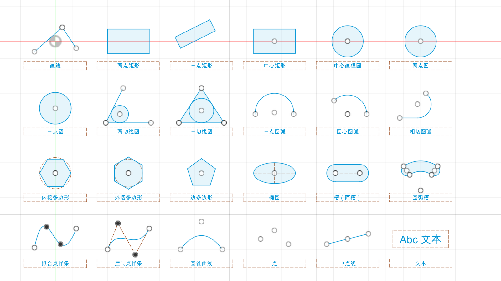
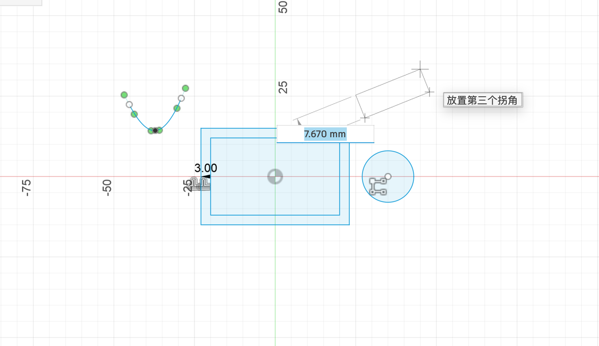
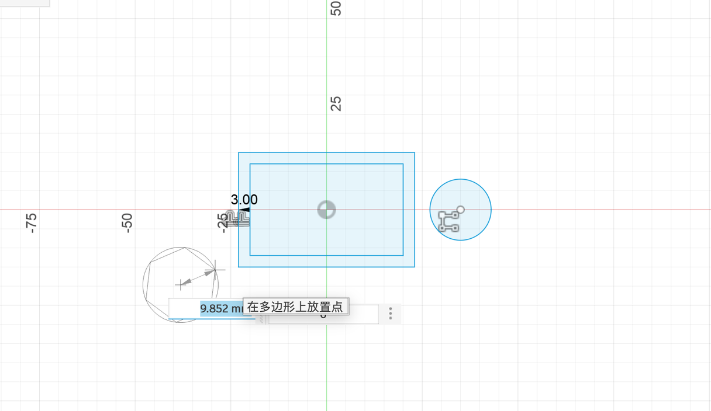
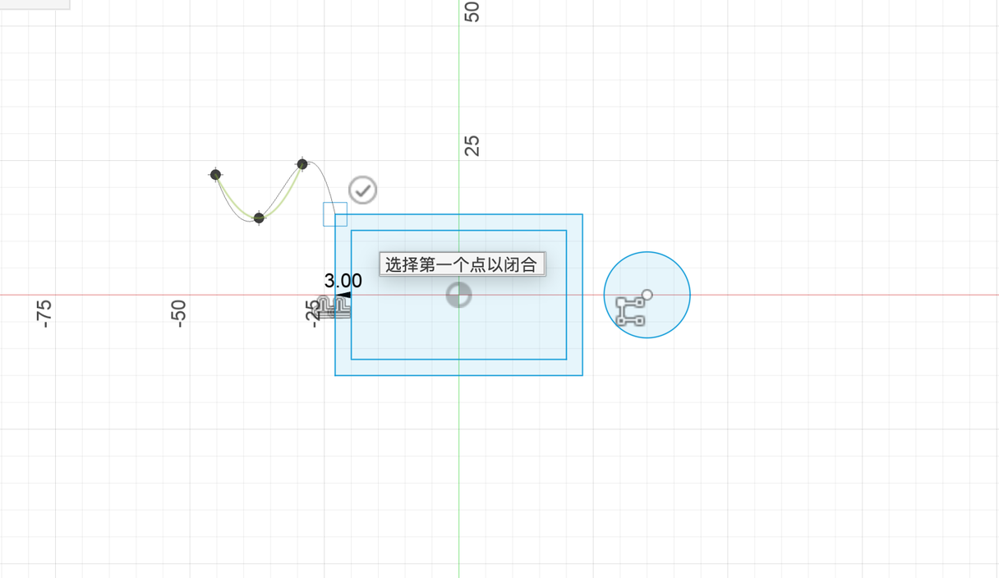
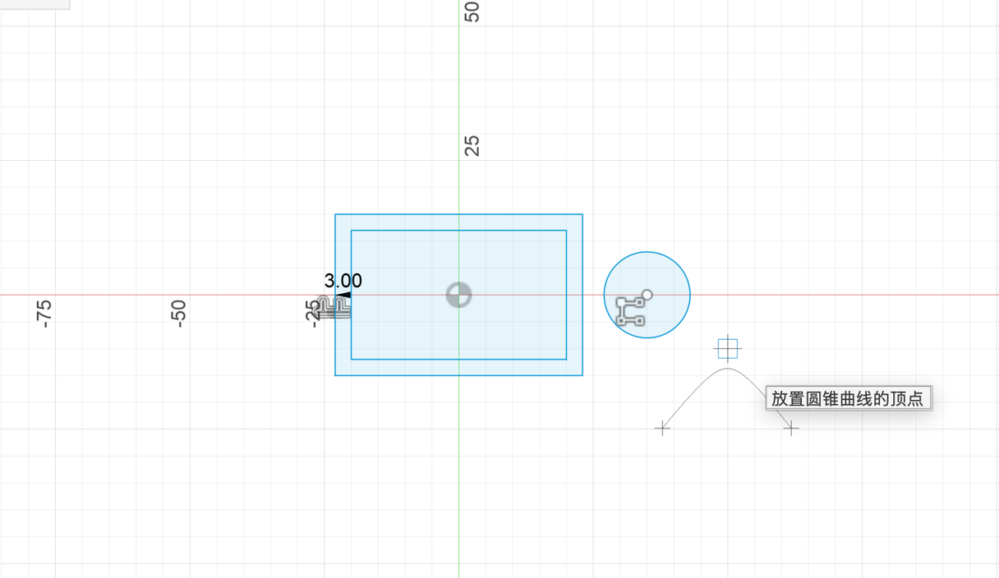

4.2 绘图工具
「创建」菜单里有二十多种画法。下面这张图是在 Fusion 里把每一种都画了一遍的结果，先整体看一眼，再逐个说明怎么画。
总览#
所有画法都在草图模式的「创建」菜单里。不用全记住：最常用的是直线、两点矩形、中心矩形、中心直径圆、三点圆弧这五个，其他的需要时回来查。

直线和矩形#
| 工具 | 快捷键 | 怎么画 |
|---|---|---|
| 直线 | L | 点起点，再点下一个点……连续画折线；回到起点自动封闭；esc 结束。按住拖动接出相切圆弧 |
| 中点线 | 先点中点，再拉出一半长度 | |
| 两点矩形 | R | 点两个对角 |
| 三点矩形 | 前两点定一条边（可以斜着），第三点定宽度 | |
| 中心矩形 | 先点中心，再点一个角 |

圆和圆弧#
| 工具 | 快捷键 | 怎么画 | 什么时候用 |
|---|---|---|---|
| 中心直径圆 | C | 点圆心，拖直径 | 最常用 |
| 两点圆 | 两点是直径的两端 | 已知直径两端位置 | |
| 三点圆 | 圆经过三个点 | 描图 | |
| 两切线圆 | 选两条线，再给半径 | 在角落里放一个圆 | |
| 三切线圆 | 和三条线都相切 | 三角形的内切圆 | |
| 三点圆弧 | 起点、终点、中间一点 | 最常用的圆弧 | |
| 圆心圆弧 | 圆心、起点、终点 | 已知圆心位置 | |
| 相切圆弧 | 从一条线的端点出发，自动相切 | 和直线光滑连接 |
多边形、椭圆、槽#
| 工具 | 怎么画 | 注意 |
|---|---|---|
| 外切多边形 | 点中心，拖出大小；输入框里可以改边数 | 多边形的边和辅助圆相切（圆在里面） |
| 内接多边形 | 同上 | 多边形的角在辅助圆上（圆在外面） |
| 边多边形 | 先点一条边的两端，再定方向 | 已知边长时用 |
| 椭圆 | 中心 → 长轴端点 → 短轴 | — |
| 槽 ▸ | 中心到中心 / 整体 / 中心点 / 三点圆弧 / 圆心圆弧 五种 | 做长条孔、弧形孔 |

样条曲线和圆锥曲线#
| 工具 | 特点 | 适合 |
|---|---|---|
| 拟合点样条 | 曲线穿过你点的每个点 | 描图、已知曲线经过哪些位置 |
| 控制点样条 | 点是“磁铁”，曲线被拉向它们，但不一定经过 | 做光滑的造型曲线（曲面建模常用） |
| 圆锥曲线 | 起点、终点、顶点 + 一个 Rho 值控制“胖瘦” | 比圆弧更饱满或更尖的过渡 |


点和文本#
- 点：只画一个点，不形成轮廓。常用来给孔定位（「孔」命令可以一次在草图的每个点上打孔）。
- 文本：见 1.1 写字。另有「路径上的文本」，让字沿着一条曲线排列。